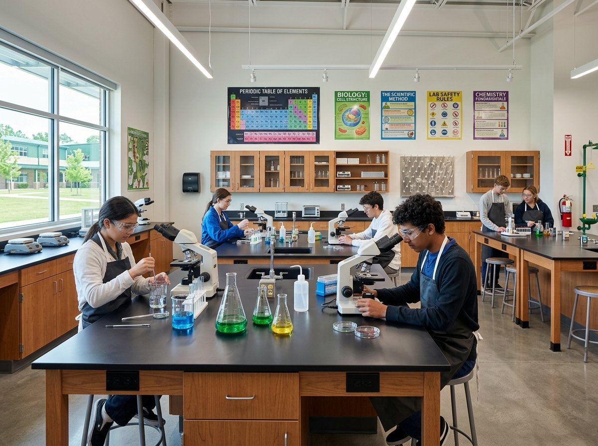
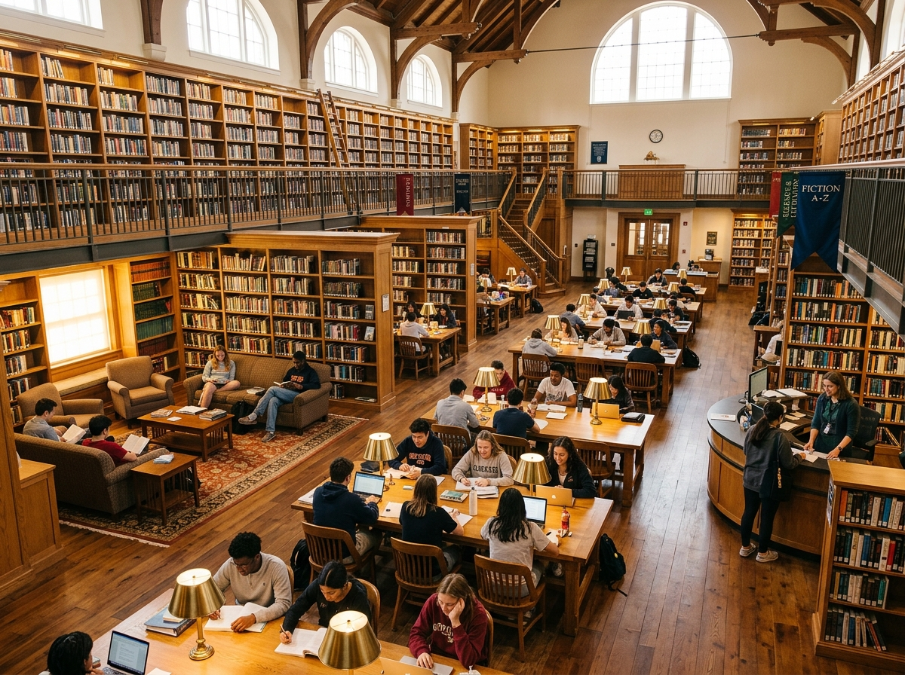
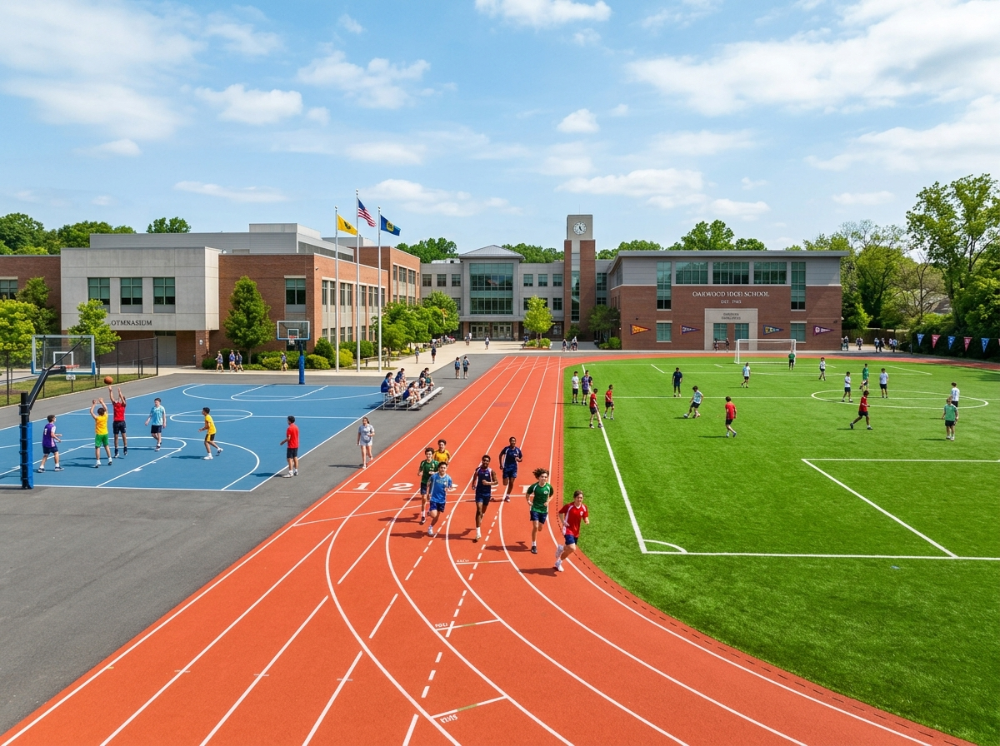
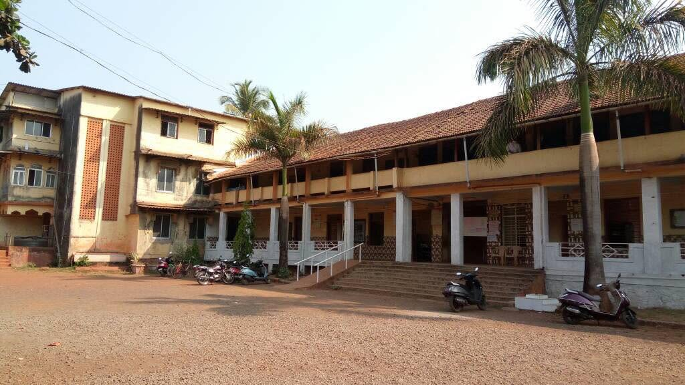

Chiplun sits along the Vashishti and Shiv rivers in the Konkan region of Ratnagiri District, approximately 250 km south of Mumbai on National Highway 66. A city of around 55,000 residents (2011 Census; est. 80,000+ by 2026) with a literacy rate of 93.92%, Chiplun has long been a commercial and educational hub for the mid-Konkan belt. Maharashtra High School is among the oldest Urdu-medium institutions in this region.
Maharashtra High School was established in 1970 by the Chiplun Education Society — itself formed in 1961 by education enthusiasts from Dadar Mohalla, Desai Mohalla, Bahadur Sheikh, Jam-e-Masjid Mohalla, Muradpur, and Mithagari Mohalla. The founders' conviction: social progress in the Konkan region was inseparable from accessible, quality education. The school began with two classrooms in Muradpur, near the Chiplun Railway Station, and has steadily grown into a campus that includes a library (3,400+ volumes), playground, and computer laboratory.
Situated in the Muradpur locality of Chiplun (PIN 415605), walking distance from Chiplun Railway Station on the Konkan Railway network (Mumbai–Mangaluru). Chiplun Municipal Council area: ~24.74 sq km. Coordinates: 17.537964°N, 73.516538°E.
The school operates with Urdu as the primary medium of instruction. Semi-English tracks are available for Science subjects. Affiliated to the Maharashtra State Board of Secondary and Higher Secondary Education (Pune Division). UDISE Block Code: 27320100147.
| YEAR | INSTITUTION NAME | TYPE | NOTES |
|---|---|---|---|
| 1961 | Chiplun Education Society | Managing Trust / Society | Founded by community leaders from Dadar Mohalla, Muradpur, Desai Mohalla, Jam-e-Masjid Mohalla & Mithagari Mohalla |
| 1970 | Maharashtra High School | Secondary (Std V–X) + Higher Secondary (Std XI–XII) | Flagship institution. Urdu medium. Started with 2 classrooms in Muradpur. UDISE: 27320100147 |
| 1981 | M.I. Wangde Nursery School | Pre-Primary | Launched to provide foundational early childhood education, feeding into the Primary school |
| 1981 | Haji Shahabuddin Wangde Primary School | Primary (Std I–IV/V) | Companion institution forming the K–10 pipeline with the High School |
| 2000 | Haji A.E. Kalsekar Junior College of Arts & Commerce | Higher Secondary (Std XI–XII) | Established on the Maharashtra High School campus. Arts & Commerce streams. Maharashtra HSC Board (Konkan Division) |
The July 2021 floods — among the worst in Chiplun's recorded history, with water levels exceeding 20 feet in parts of Muradpur and Dadar Mohalla — caused severe damage to school infrastructure, submerging classrooms and the library's lower shelves. In the immediate aftermath, the Maharashtra High School building was repurposed as a relief centre and temporary shelter for displaced residents. Alumni associations launched financial recovery appeals, and the Chiplun Bachav Samiti volunteers joined school staff in clearing mud from the campus. The library was partially restored through alumni donations and community fundraising. The episode demonstrated the school's enduring role not merely as an educational institution, but as a civic anchor for the Muradpur neighbourhood.
Maharashtra High School operates alongside — but is distinct from — the following institutions in the Chiplun educational cluster. Families should verify UDISE codes carefully when applying for government schemes.
| INSTITUTION | TYPE / MEDIUM | LOCALITY | RELATIONSHIP |
|---|---|---|---|
| Maharashtra High School (महाराष्ट्र हायस्कूल) | Secondary + Jr. College / Urdu | Muradpur, Dadar Mohalla | THIS INSTITUTION — UDISE: 27320100147 |
| Peth Map Marathi & Urdu School | Primary / Marathi & Urdu Bilingual | Chiplun Peth | Separate institution; Primary feeder for local families |
| L.M. Bandal High School | Secondary / Marathi | Chiplun | Separate institution; Marathi-medium secondary |
| Paranjape Motiwale High School (परांजपे मोतीवाले हायस्कूल) | Secondary / Marathi | Chiplun | Separate institution; No institutional affiliation |




Archival photographs from Maharashtra High School Chiplun official records.
Academic and administrative leadership at the Muradpur campus.